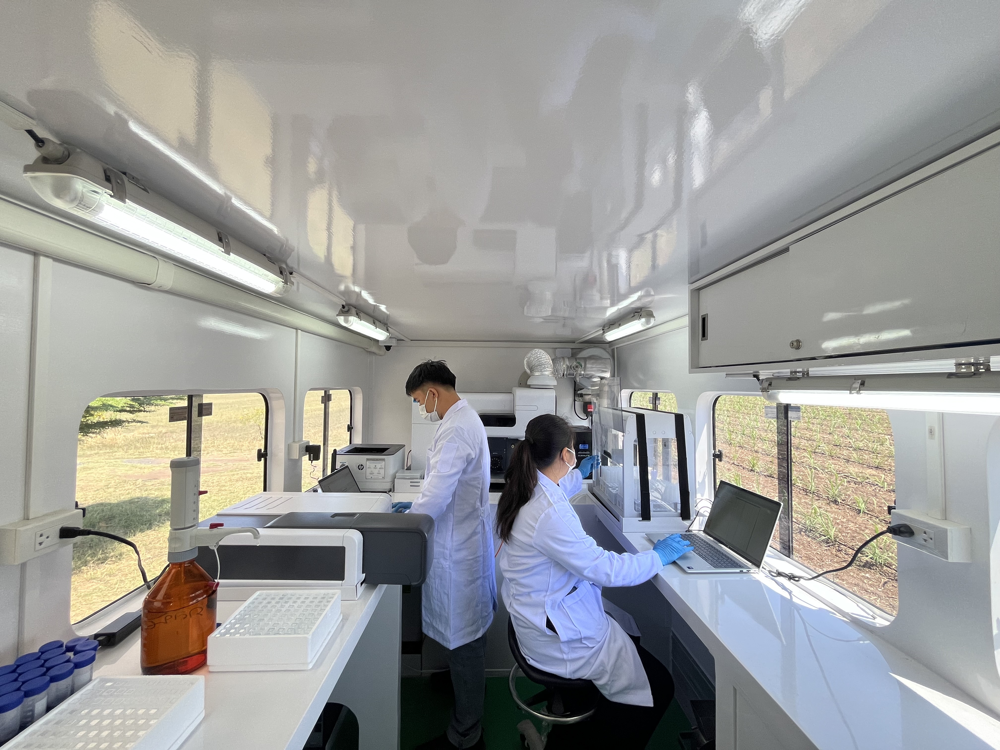

วิเคราะห์คุณภาพดินแม่นยำด้วยอุปกรณ์วิจัยทันสมัย ออกให้บริการถึงตำบลเพื่อการใส่ปุ๋ยอ้อยอย่างถูกจุดและคุ้มค่าที่สุด
ไม่มีค่าบริการตรวจวิเคราะห์ดินสำหรับชาวไร่คู่สัญญาในปีแรก
ประเมินวิเคราะห์ผลได้ทันทีรวดเร็วกว่าส่งตรวจแล็บทั่วไปที่นาน 2-3 สัปดาห์
ครอบคลุมทุกตำบลในเขตส่งเสริม ให้บริการถึงหน้าไร่ของเกษตรกร
ตรวจวัดครอบคลุมทั้ง N, P, K, pH และลักษณะโครงสร้างดินโดยละเอียด

กลุ่มมิตรผลเล็งเห็นความสำคัญของการบำรุงดินตามผลตรวจวิเคราะห์ เพื่อลดความสิ้นเปลืองของปุ๋ยเคมี เราจึงนำรถโมบายเคลื่อนที่และทีมผู้เชี่ยวชาญเดินทางออกตรวจดินให้ชาวไร่ฟรี เพื่อส่งเสริมการทำการเกษตรอย่างมั่นคงและยั่งยืน